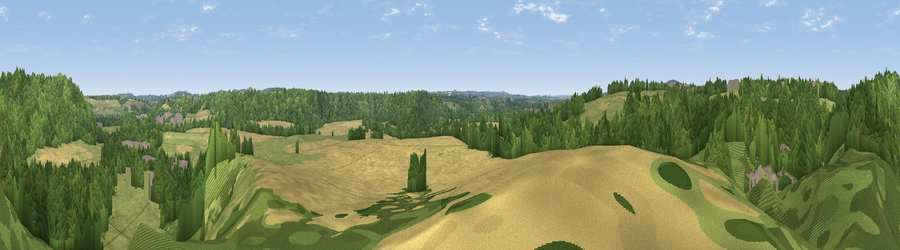

Viewpoint near Shincliffe
#34891 in England · top 74% of its area beats it · near Shincliffe · footpathWhere it is
The exact computed spot (NZ 27525 40125). Click the marker for map links.
Public access: a public right of way passes within 49 m of this spot. Computed from Natural England's CRoW access layer and OpenStreetMap rights of way — not the legal definitive map. Always verify locally.
The view, rendered

A 360° render of this exact spot computed from the terrain model, tree cover and land cover — summer colours, afternoon light, calibrated against photographs of famous viewpoints. Real trees, hedges and buildings will differ in detail.
The panorama
Grey silhouette: terrain skyline in each direction (720 bearings, Earth curvature and refraction included). Dashed green: skyline with trees (+15 m) and buildings (+8 m) as obstacles. Blue strip: how far the ground is visible on each bearing.
Where the view opens
Wedge length = distance to the farthest visible ground on that bearing (vegetation-aware). Rings at 10, 25 and 50 km.
What fills the view
55% woodland · 25% grassland · 17% cropland · 3% built-up
Angular shares of the visible panorama (visual magnitude), not map area. Landscape diversity 0.47 (0–1 Shannon).
Key numbers
More beautiful places nearby
The staircase of upgrades: each row has a higher view potential than everything closer. Driving times are estimates from straight-line distance, calibrated against real road routing — check an actual route before setting out.
| Place | Direction | Drive | Score |
|---|---|---|---|
| Viewpoint near High Shincliffe | SE · 2 km | ~4 min | 44.5 |
| Viewpoint near Hett | SSE · 3 km | ~8 min | 47.0 |
| Viewpoint near Brandon | W · 5 km | ~10 min | 47.6 |
| Viewpoint near Bowburn | ESE · 5 km | ~11 min | 69.0 |
| Viewpoint near Quarrington Hill | ESE · 6 km | ~13 min | 73.1 |
| Viewpoint near Houghton-le-Spring | NE · 14 km | ~26 min | 73.7 |
| Viewpoint near Houghton-le-Spring | NE · 14 km | ~26 min | 76.0 |
| Pontop Pike | NW · 18 km | ~31 min | 77.8 |
54.75532, -1.57384 · source: screening · position refined by local search. Computed location — check access rights before visiting.